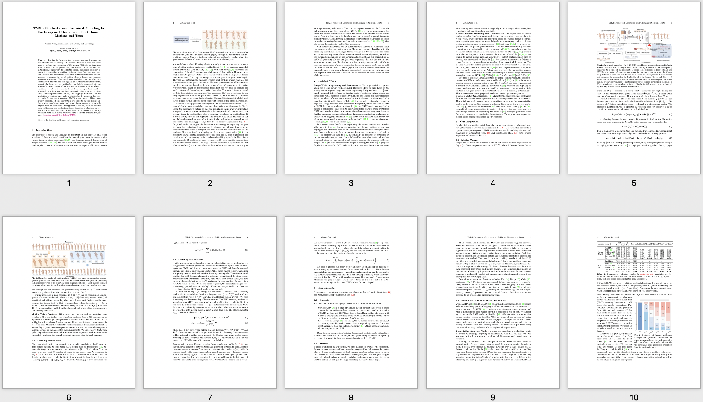

TM2T: Stochastic and Tokenized Modeling for the Reciprocal Generation of 3D Human Motions and Texts
Inspired by the strong ties between vision and language, the two intimate human sensing and communication modalities, our paper aims to explore the generation of 3D human full-body motions from texts, as well as its reciprocal task, shorthanded for text2motion and motion2text, respectively. To tackle the existing challenges, especially to enable the generation of multiple distinct motions from the same text, and to avoid the undesirable production of trivial motionless pose sequences, we propose the use of motion token, a discrete and compact motion representation. This provides one level playing ground when considering both motions and text signals, as the motion and text tokens, respectively. Moreover, our motion2text module is integrated into the inverse alignment process of our text2motion training pipeline, where a significant deviation of synthesized text from the input text would be penalized by a large training loss; empirically this is shown to effectively improve performance. Finally, the mappings in-between the two modalities of motions and texts are facilitated by adapting the neural model for machine translation (NMT) to our context. This autoregressive modeling of the distribution over discrete motion tokens further enables non-deterministic production of pose sequences, of variable lengths, from an input text. Our approach is flexible, could be used for both text2motion and motion2text tasks. Empirical evaluations on two benchmark datasets demonstrate the superior performance of our approach on both tasks over a variety of state-of-the-art methods.
Paper
|
 |
|
TM2T: Stochastic and Tokenized Modeling for the Reciprocal Generation of 3D Human Motions and Texts
Chuan Guo, Xinxin Zuo, Sen Wang, Li Cheng
ECCV, 2022
[Paper]
[Bibtex]
|
Demo Video
Acknowledgements
This work was partly supported by the NSERC Discovery, UAHJIC, and CFIJELF grants. I also appreciate that the university of Alberta fund me with the Alberta Graduate Excellence Scholarship. This webpage template was borrowed from here.
|
{kind=link}